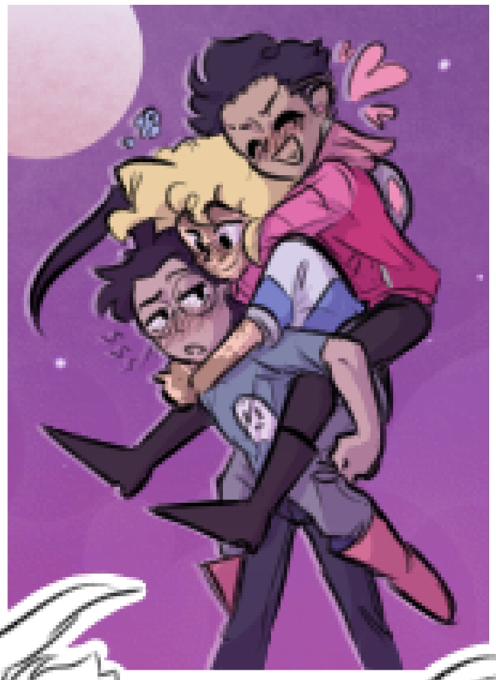

a paranormal investigator, nosy human, and alien invader walk into an urth skool.
they then proceed to have the worst slow burn romance in the history of slow burn romances.

i have turned invader zim into a cheesy romcom and NO ONE CAN STOP ME! X33
much better in destop view :3


anyway, this place is dedicated to the oc x canon ship i had NO idea would take over my life when i made it as a dumb little 11 year old. invader zim has turned into such a big comfort and hyperfixation for me and i NEEDED to figure out a way to show my love for the shippy side of things!
this ship is preeetty canon divergent (as this is part of a fan series of mine), both zim and dib have had to go through domestication arcs LOL. i talk more about why i love zim and dib and these kinds of things in the blog tab over on the right (at the bottom of the page for mobile users.) i do NOT get offended when people tell me it's ooc, but i definitely get irked when people say i haven't watched the show, thus me saying this.
more about the blog tab: i have YEARS of headcanons, developments, aus, and general thoughts about these guys, and i use that tab as a way of documenting them all in a more cohesive space :) the social where i talk about this ship the most is my tumblr, so feel free to look thru there ^_^ also. here's ely's toyhou.se page. i talk more deeply about my love for ely too in the manifesto :D
speaking of the manifesto! that's just me explaing the ship and its origins in more detail! fanarts has a bunch of the art and fics ive written, and the episode diary is just me leaning into the roleplaying bit and showing off my screenshot and comic edits :Dc okay that's all!! i'll leave it at that LOL. my blorbos everr !!
aand heres the obligatory explanation that i dont actually have a crush on these fictional characters, i just like em a lot :3 this is my autistic joy!! i also dont want them to be canon or have jhonen see this. i think i'd actually jump into a well /j
also as of right now the side tabs dont work yet, theyre still under construction ^_^;;
sitemap